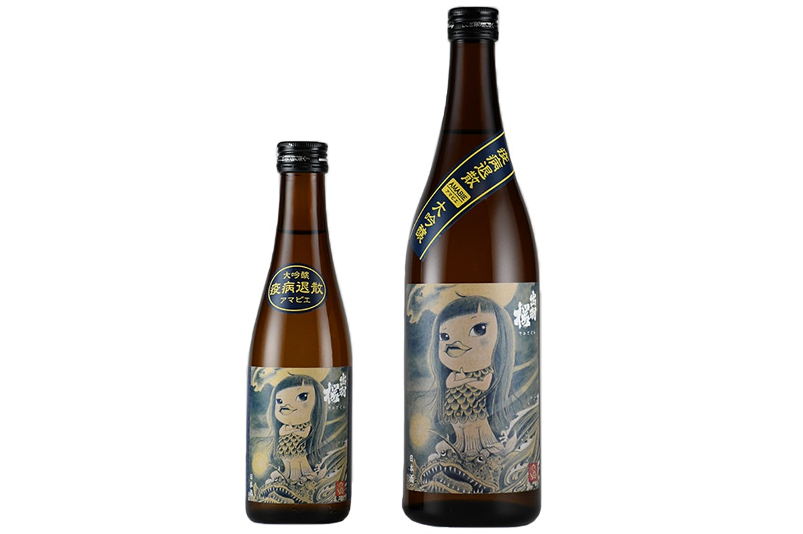
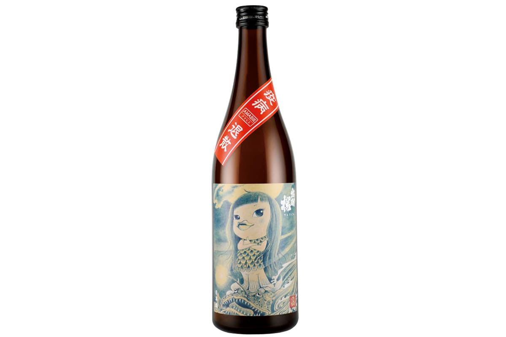

Префектура Ямагата · Тэндо · сакэ
«Дэвадзакура» из Тэндо: сакэ с Амабиэ на этикетке и сакэварня, куда можно зайти

В городе Тэндо префектуры Ямагата работает сакэварня «Дэвадзакура». В 2020 году она выпустила сакэ с Амабиэ, японским духом, который, по поверью, прогоняет болезни, а в 2026 году на саму сакэварню можно попасть с экскурсией.
Сакэварня
«Дэвадзакура» в Тэндо
Сакэварня «Дэвадзакура» стоит в Тэндо, и её сакэ узнают по яркому фруктовому аромату. В 2020 году, когда по Японии распространялся новый коронавирус, сакэварня решила сделать то, что в её силах.
Так появился проект «Сакэ, которое подбадривает». Сначала вышло сакэ в бутылках по 300 мл в поддержку ресторанов, затем особое дзюммай «Амабиэ-сама», а для обычных покупателей сакэварня устраивала встречи за сакэ онлайн.
Этикетка
Амабиэ, которая прогоняет болезни
Амабиэ это ёкай, японский дух, которому приписывают силу прогонять эпидемии. Для этикетки сакэварня взяла картину «Амабиэ-сама» Масао Сато, художника родом из Ямагаты. Сама картина хранится в собрании музея «Дэвадзакура» в Тэндо.

Перед продажей сакэ освятили в святилище Такэисао в Тэндо, где почитают Нобунагу Оду (1534–1582). Этот полководец XVI века начал объединение раздробленной Японии.
Первое сакэ «Амабиэ-сама», особое дзюммай из риса «Дэва-но сато» с полировкой до 55%, разошлось полностью. Сакэ получилось чистым, с умеренной умами, и к нему советовали рататуй из летних овощей. Вслед за ним в 2020 году вышло дайгиндзё «Амабиэ-сама»: пышный фруктовый аромат в стиле «Дэвадзакуры», лёгкое тело и чистый, собранный вкус. В 2020 году бутылка на 720 мл стоила 1400 иен без налога, на 300 мл 580 иен без налога. В 2026 году этой серии на сайте сакэварни нет.
Визит
Сакэварня и музей
По данным сайта сакэварни на 2026 год, на производство водят экскурсии с гидом, только на японском языке и только для гостей от 20 лет; иностранцам предлагают договориться об экскурсии отдельно. Само сакэ варят только зимой, летом показывают лишь оборудование. Напротив сакэварни, через дорогу, стоит музей «Дэвадзакура» с собственной парковкой.
Сакэварня «Дэвадзакура»
- Адрес
- префектура Ямагата, Тэндо, Хитоитимати, 1-4-6
- Телефон
- +81 23-653-5121
- Как добраться
- 15 минут пешком от станций Тэндо и Тэндо-Минами
- Сайт
- dewazakura.co.jp
Музей «Дэвадзакура»
- Адрес
- префектура Ямагата, Тэндо, Хитоитимати, 1-4-1
- Телефон
- +81 23-654-5050
- Часы работы
- 9:30–17:00 (вход до 16:30)
- Выходные
- понедельник (если праздник, то вторник), новогодние дни, дни смены экспозиции
- Цены / Вход
- взрослые 600 иен